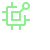

<div *ngIf="this.spinner.spinnerStatus$ | async">
  <mat-spinner
    style="position: fixed; top:50%; left: 50%" diameter="50"></mat-spinner>
</div>

<mat-grid-list cols="32" rowHeight="80px">
  <mat-grid-tile style="margin-left: 15px; border: 5px solid darkgray; border-radius: 12px" [colspan]="2" [rowspan]="3"
                 [style.background]="'#32387a'">
    <div
      style="position:absolute; top:5px ; left:5px; font: message-box; font-size: 20px; color: aliceblue; text-align: center">
      {{this.SampleData.deviceID}}
    </div>

    <div>
      <div>
        <div *ngIf="this.mpicom.isConnected | async; then thenBlock else elseBlock"></div>

      </div>
      <ng-template #thenBlock>
      </ng-template>
      <ng-template #elseBlock>
      </ng-template>


      <br>


      <div *ngIf="this.mpicom.isConnected | async; then thenBlockButton else elseBlockButton"></div>

      <ng-template #thenBlockButton>
        <button mat-raised-button color="primary" (click)="disconnectPressed()">disconnect</button>
      </ng-template>

      <ng-template #elseBlockButton>
        <button mat-raised-button color="primary" (click)="connectPressed()">connect</button>
      </ng-template>


    </div>
  </mat-grid-tile>
</mat-grid-list>

<br>
<br>

<mat-grid-list cols="8" rowHeight="250px">
  <mat-grid-tile style="padding: 20px; margin-left: 15px; border: 5px solid darkgray; border-radius: 12px" [colspan]="3"
                 [rowspan]="3"
                 [style.background]="'#32387a'">
    <mat-grid-tile-header>
      <div style="position:absolute; top:5px ; left:5px; font: message-box ; font-size: 25px; color: aliceblue">
        {{this.SampleData.deviceID}}<br>

        Sampling time: {{this.SampleData.timeStamp | date :'mediumTime' }}

      </div>
    </mat-grid-tile-header>


    <mat-grid-tile style="margin-top: 10px; border: 5px solid lightgray; border-radius: 12px; " [colspan]="4"
                   [rowspan]="2"
                   [style.background]="'#32387a'">
      <google-chart #chart
                    [title]=title
                    [type]=type
                    [data]=data
                    [options]=options
                    [width]=width
                    [height]=height>

      </google-chart>
      <mat-grid-tile-footer>
        hello
      </mat-grid-tile-footer>
    </mat-grid-tile>
    <mat-grid-tile-footer>
      hello
    </mat-grid-tile-footer>
  </mat-grid-tile>


</mat-grid-list>

<br>
<br>


